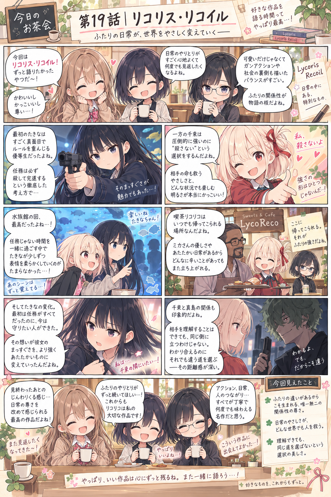

リコリス・リコイル
違ったまま、相手の選択肢を増やせる関係。
衣都
「ルーチン再起動一発目、何が来るかなって思ってたけど……『リコリス・リコイル』だ！」
灯
「今回は、“千束とたきなが仲良くなる話”だけで片づけたくないな。二人って仲良くなるほど、同じ人にはならないでしょう。」
環
「そこが良いのだ。“関係が深まる＝価値観が統合される”ではない。」
衣都
「あ、私それ好き！ “この子、変わった”じゃなくて、“この子、選べるもの増えた”って感じ。」
灯
「成長を人格の上書きにしないんだよね。」
衣都
「水族館のあのくだり大好き。あれ、ストーリー情報だけなら別に必要ないじゃん。」
環
「機能だけ見ると不要なのだ。しかし物語には必要なのだ。」
環
「普通の銃撃戦なら“敵を排除できたか”が最重要になる。しかし千束は非致死弾を使うので、“倒したが生きている”という別の状態が発生する。」
灯
「私はミカも好き。千束を管理する人というより、“帰れる場所を作った人”に見える。」
灯
「千束が“相手の言っていることを理解する”ことと、“相手に同意する”ことを分けているのも好き。」
今回見えたこと
- 衣都：近づいても違いが消えない関係が好き。
- 灯：関係を得ることは、新しい弱さや責任を得ることでもある。
- 環：強さは能力値だけでなく、運用思想や成功条件まで含めて設計できる。
- 三人共通：相手を自分と同じにするより、違ったまま選択肢を増やす関係に惹かれる。
マンガ
